古代瓦当的开放图像，共 1208 张、694 件，每张附自动分割结果（标准裁剪图与掩膜，可能有误）。按母题类别浏览（自动归类，可能有误）。
一键下载全部分割结果（ZIP，约 312 MB）只下载正面图的分割结果（ZIP，约 230 MB）下载拍正图（ZIP，约 148 MB）
“正面”指拍到瓦当正面，为 AI 自动判断，不保证准确。“拍正图”是按瓦当边缘的椭圆（多为外缘，少数为内缘）把斜拍的图拉回正圆的版本，535 张图有，为自动估计，可能不准。
莲花纹（508）


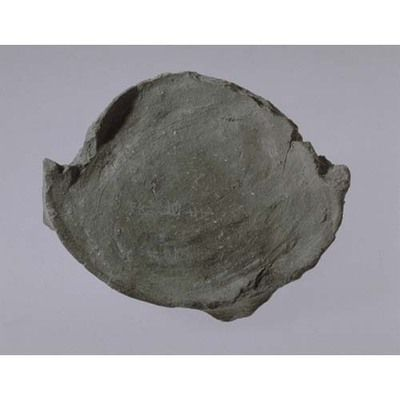

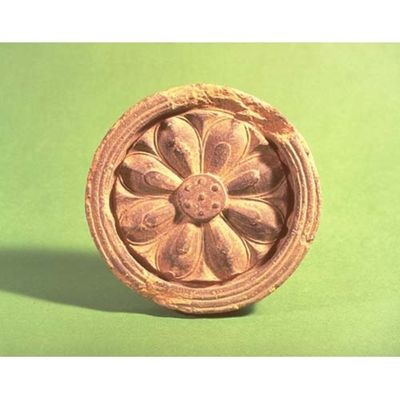
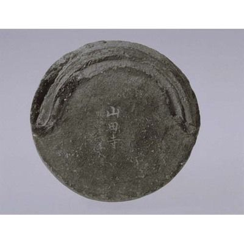
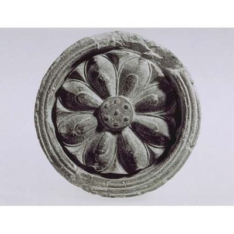
兽面纹（181）
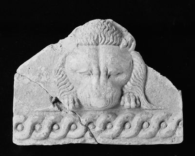

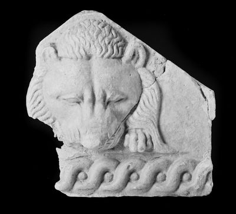

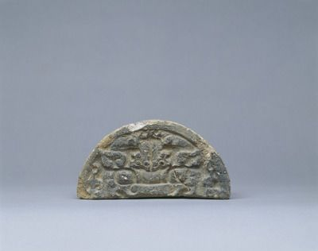
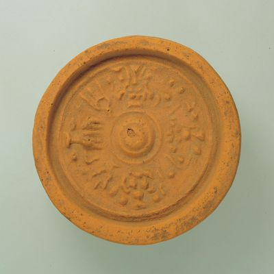


人面纹（39）
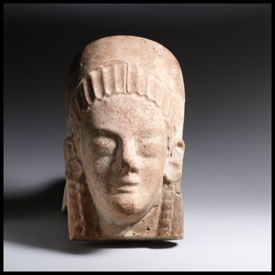
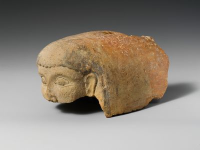
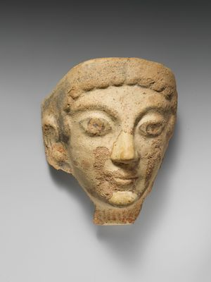
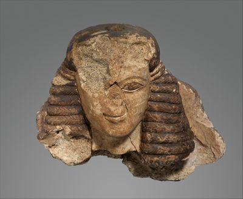
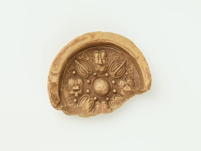
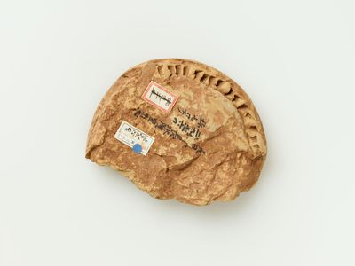
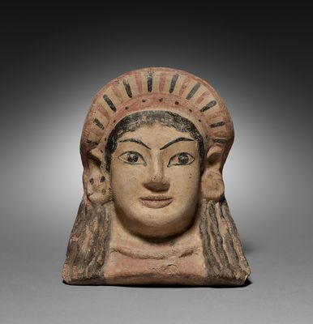
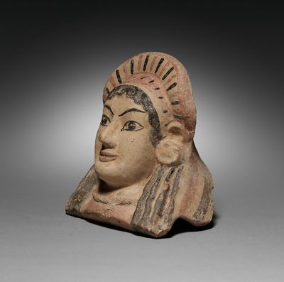
其他纹样（37）
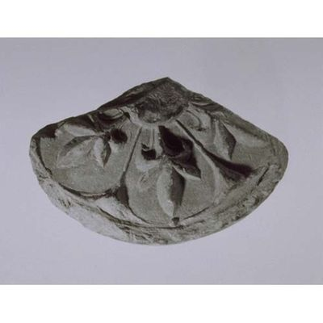

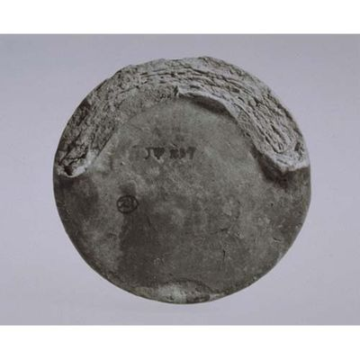
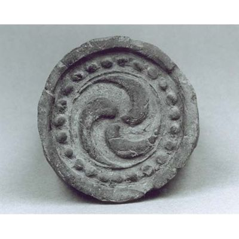
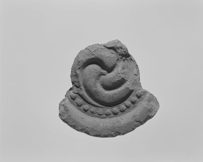

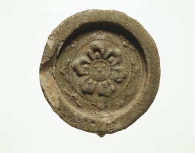

戈耳工首（22）
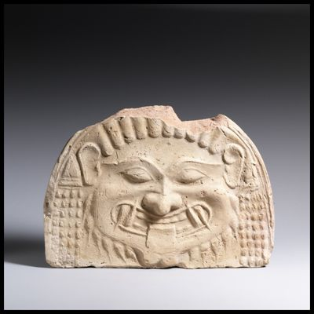
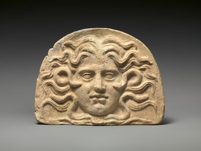
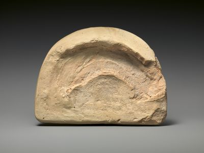
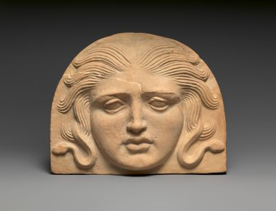
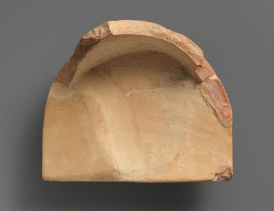
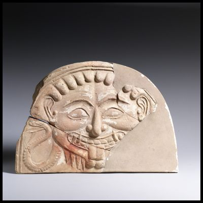
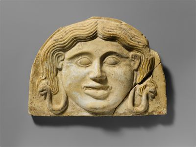

西勒诺斯首 / 萨提尔首（21）


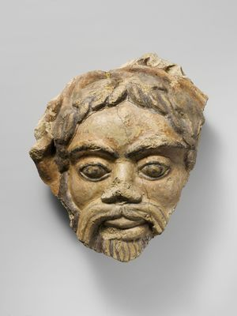


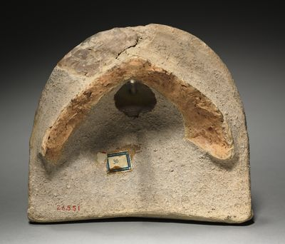
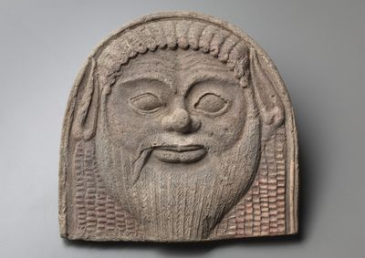

动物纹（14）
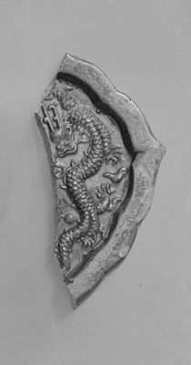
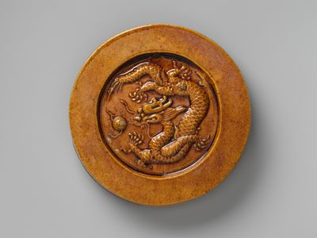
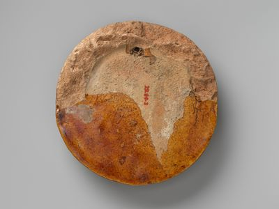
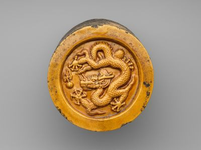
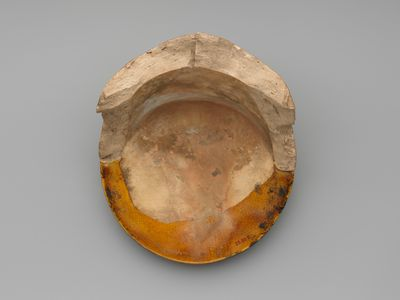
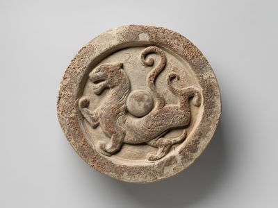
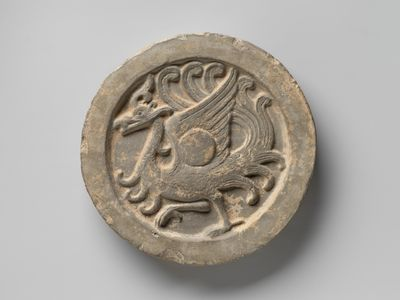
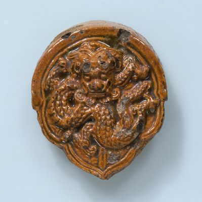
鬼面纹（13）
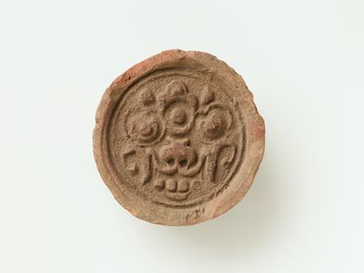
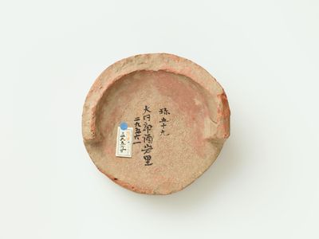
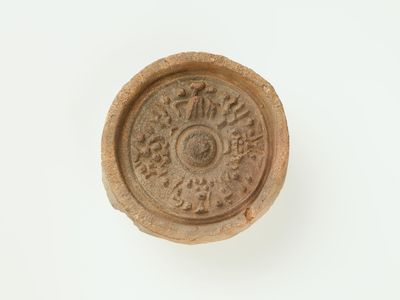
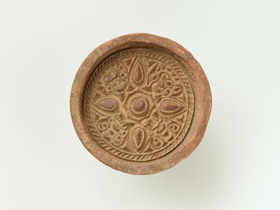
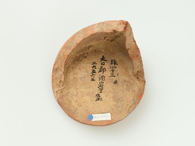
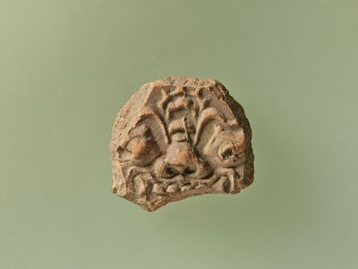
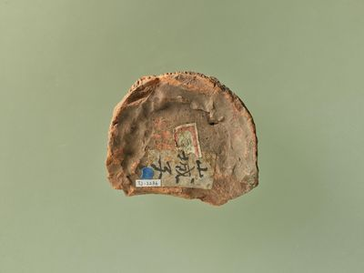
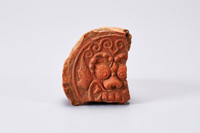
几何纹（5）
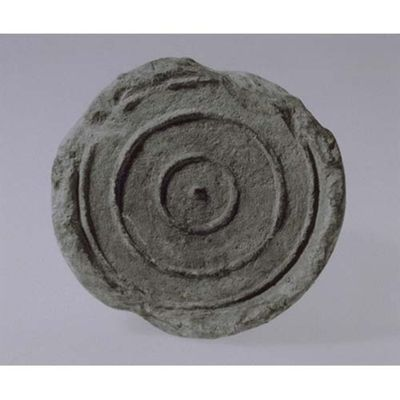
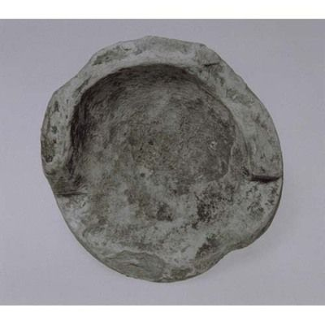
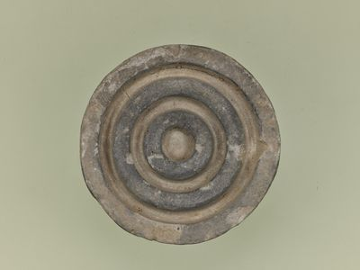
文字（2）
迈那得斯首（1）
未定（365）